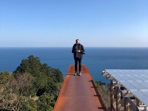

Neil Hobbs

Neil is a landscape architect and director of Harris Hobbs Landscapes,
a Canberra based landscape architectural firm that has operated for
over 30 years. In their practice they integrates art into the public realm,
through memorial design, commissioned works, artwork installation,
and collaborating with temporary events in the art and design field.
Karina Harris

Karina is a landscape architect and director of Harris Hobbs Landscapes,
a Canberra based landscape architectural firm that has operated for over 30 years.
In their practice they integrates art into the public realm, through
memorial design, commissioned works, artwork installation, and collaborating
with temporary events in the art and design field.
Paul Crawford
Paul Crawford is a projects and real estate partner with international
law firm King & Wood Mallesons where he advises both private and government clients
around Australia on a diverse range of real estate matters. Having moved to Canberra
to attend the Australian National University he now considers himself,
some 34 years later, almost a local. Paul is excited to be involved with this special
event and its celebration of public art in our unique city.
George Katheklakis

George is the Managing Director of KDN Group, a local Canberra based business
that specialises in Property Development, Management and Investment.
With experience in the Australian property and design sector that spans over 25 years,
George remains driven in the delivery of excellent design and urban environments that
support and promote sustainable and integrated communities at all levels.
Jordan Evans-Tse

Jordan Evans-Tse is a multidisciplinary designer at Place Logic,
a local urban design and landscape architecture firm. Born and
raised in Canberra, Jordan has always felt a deep connection to this city,
its rolling hills, and public open spaces and to the cultural institutions
that also call Canberra home. Human-centred and sustainable design principles
are key to her design practice and she is a proponent of projects that celebrate
the unique characteristics of our Nation’s Capital. Since graduating in 2011,
Jordan has applied her skill set to landscape architecture,
interior architecture, exhibition, and graphic design projects both locally
and internationally.
Christine Wallace

Dr Chris Wallace is Associate Professor, 50/50 By 2030 Foundation,
Faculty of Business, Government and Law, University of Canberra,
where she is concerned with structural solutions for gender equity in public sector
leadership and political representation. Wallace works in modern and contemporary
political, international and global history with special reference to leadership,
transnational lives, and transformational change and the information strategies
underlying it.
Kevin miller

Kevin Miller is a director of CCJ Architects which is an evolution of
Collard Clarke Jackson, an architectural practice established in Canberra in the 1960s.
CCJ has completed a number of public, community and arts related projects in Canberra
and the surrounding region including (recently) the Link at Strathnairn Arts,
GAD at Commonwealth Place, refurbishment of Goulburn Regional Gallery and the
refurbishment of the Tuggeranong Arts Centre. The practice actively pursues
environmental best practice and the incorporation of artworks within its
large range of project types.
Heeseon Jung

Heeseon Jung is a Landscape technician at Harris Hobbs Landscapes (HHL)
and assist the team in realising their visions in technical and visually
appealing drawings. She is well-versed in industry design tools to produce
concepts and detailed design documentation, as well as web / print publications
for HHL and affiliated events such as contour 556.